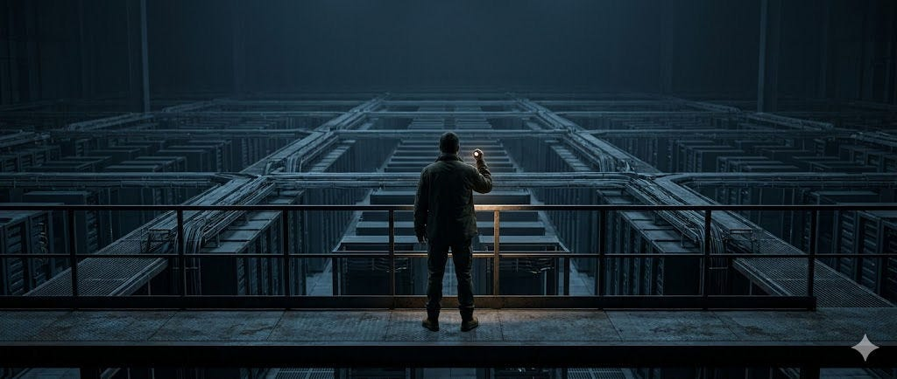

For a long time, the software industry has been able to hide inside a comforting assumption: That code is, in principle, understandable. Messy, maybe. Complex, sure. Badly documented, often. But understandable. That assumption is breaking. Not because engineers suddenly got careless. Not because AI made everyone lazy. Not because one generation stopped caring about craftsmanship. It is breaking because software itself has changed.
We are now building systems whose usefulness no longer depends on preserving full human comprehension. They can be operationally valuable, commercially effective, and tightly woven into the real world even when no one person — and often no one team — can honestly say they fully understand the whole causal structure.
That is not a temporary glitch.
That is the new condition.
I call that condition dark software reality.
Not dark code as an insult. Not dark code as a punchline. Dark code as a regime.
A regime where execution outruns comprehension.
A regime where boundaries matter more than internals.
A regime where the system is increasingly managed through traces, contracts, policies, runtime behavior, tests, permissions, and observed effects rather than through intact human mental models.
Once you see it clearly, a lot of the industry starts to look strange.
We still talk as if the main challenge is writing code faster. It isn’t.
We still talk as if the main challenge is getting better AI copilots. It isn’t.
We still talk as if observability, code review, and compliance paperwork, stacked high enough, will somehow restore mastery over systems that have already crossed a threshold. They won’t.
The real problem now is this: How do you govern software reality after direct human understanding stops being the organizing requirement? That is the problem I care about. And that is the problem I’ve been building around.
I am not interested in building another assistant that helps you spray more code into the world. The industry already has plenty of that. More code generation without stronger control just accelerates the underlying problem. I am interested in building the layer that becomes necessary after that acceleration.
A layer that can perceive what the software is actually doing.
A layer that can compress overwhelming technical reality into usable distinctions.
A layer that can decide what should be admitted, blocked, escalated, revised, or quarantined.
A layer that can turn opacity into governed action.
That is how I think about ANANS.
Not as a code-understanding toy.
Not as compliance theater.
Not as a dashboard dressed up as governance.
Not as a prettier wrapper around existing observability.
ANANS is aimed at a harder category: a governance-perception layer for dark software reality.
That phrase matters, so let me unpack it.
“Governance” means this layer is not passive. It does not just observe. It carries policy. It applies constraints. It creates admissibility boundaries. It decides what is acceptable and what is not.
“Perception” means it has to do more than collect telemetry. It has to read a software environment the way an experienced operator reads a battlefield: not by possessing every internal detail, but by identifying the signals that matter, the relations that matter, the failure shapes that matter, and the changes that should trigger action.
“Dark software reality” means the target is not neat, local, handcrafted code. The target is the world we are actually entering: distributed, layered, vendor-dependent, partially generated, partially emergent, operationally consequential systems whose truth is scattered across runtime behavior and boundary evidence.
That is the category I think comes next. Because the old control model is collapsing. In the old model, if things got risky enough, you could always fall back on deeper human inspection. Open the files. Trace the logic. Follow the mechanism. That fallback is weakening.
Now the real truth of a system may live across model behavior, orchestration layers, prompts, policies, queues, retries, feature flags, permissions, tool calls, vendor dependencies, hidden transformations, and runtime side effects. The important reality is no longer stored in one place, and it is no longer cleanly recoverable through local reading alone.
So the winning systems will not be the ones that pretend total understanding is still available. They will be the ones that can perceive enough reality to govern it reliably. That is what I think most people are still missing. The next control surface is not better autocomplete.
It is not bigger dashboards.
It is not more ceremonial governance.
It is not asking exhausted engineers to “be more careful.”
It is a new layer that sits between opaque software behavior and human decision-making, translating what cannot be fully held in the head into what can still be acted on with discipline.
That is what my work is moving toward
.
At a high level, the approach is simple even if the implementation is not:
First, the system has to detect and assemble the right signals.
Second, it has to reduce those signals into actionable structure.
Third, it has to bind that structure to policy and consequences.
Fourth, it has to produce evidence that the decision path was real, bounded, and auditable.
Not explanation as decoration.
Not governance as branding.
Operational truth with teeth.
That matters because the organizations that survive this shift will not be the ones with the most code. They will be the ones with the best governed relationship to code they do not fully understand. That is a very different competitive advantage.
It means the moat is not raw generation.
It is disciplined interpretation.
It is runtime admissibility.
It is fail-closed control.
It is being able to tell the difference between something that merely runs and something that should have been allowed to run at all.
That is the world I think we are entering. And to be blunt, I think a lot of the market is still pretending we are in the old one.
They are trying to solve a volume problem. think the real problem is now epistemic. They are trying to help people produce more software. I think the deeper need is to govern software reality under conditions of partial darkness.
They are still asking, “How do we build faster?” I am asking, “How do we stay in control when the software has already outgrown full local understanding?” That is the question behind my work.
And I think it is going to become one of the defining infrastructure questions of the next few years. Because dark code is not the exception anymore. It is becoming the default.
And once that becomes obvious, the category after software generation is not hard to see.
It is software perception.
Bound to governance.
Built for opacity.
Strong enough to matter.
That is where I am placing my bet.
I’m Garth Noel. I’ve been building a governed extraction and admission-control stack called ANANS for the past two years from Trinidad and Tobago. This is one bounded bench result from that work.